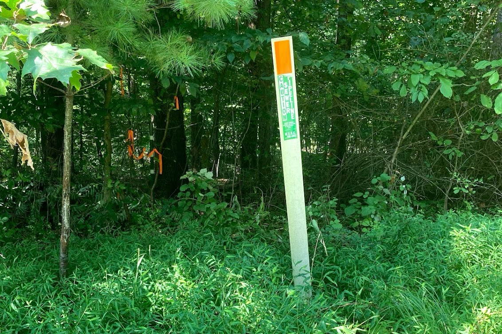

How suburban sprawl in Frederick and Montgomery County has affected our streams and ecosystem
Frederick and Montgomery County's housing growth
Residential and commercial development in two of Maryland’s “best counties to live in” has
resulted in concerns about stream quality within the pivotal Chesapeake Bay Watershed. The
county councils
of both counties have found their own approaches, or lack thereof, of mitigating
environmental collapse.
Frederick, Maryland’s fastest-growing county,
reached record high
residential permit requests
in 2024. At 2,250 permits, numbers like these have not been seen since before the great
recession. Similarly,
Montgomery County has seen similar growth in its suburbs alongside the I-270 corridor.
The increasing expansion of development outside of cities, known as suburban sprawl, results
in surface runoff of pollutants into local waterways. Both counties are a part of the
greater Potomac River watershed, with all water eventually flowing into the Chesapeake Bay.
As a result, pollutants there have lasting impacts across the entire state.

Photography by Brandon Kim
Suburban sewer lines such as these in Montgomery County ultimately end up spilling into the
Potomac
River, and ultimately, the Chesapeake Bay.
High runoff of pollutants in suburban neighborhoods, such as road salt, lawn fertilizer and
litter
lead
to high amounts of waste in nearby streams. Clean waterways support $3.2
billion a year in economic activity
in the Chesapeake Bay.
Decreased stream quality is not exclusive to either county
According to Maryland GIS data from 2024, nearly all streams in both counties reached a
threshold of sediment that surpassed the total maximum daily load, a measurement used to
determine the maximum amount of a specific pollutant a waterway can have. Some streams in
Frederick County, particularly in the Brunswick Area, needed immediate attention.
Stream sediment and pollution in both counties
Additionally, high concentrations of phosphorus and nitrogen have been reported in all of
Frederick and rural portions of Montgomery. Overabundance of these nutrients is known to
cause eutrophication, which ultimately results in excessive algae and plant growth and
limits sunlight for native marine life.
Frederick falls behind on Montgomery's green efforts
Increased residential development has also produced an increased need for winter-ready
roads, leading all Montgomery streams to have a concerning level of chlorides attributed to
road salt.
In 2020, two
bills meant to protect forests and their streams by expanding protection zones
expired and were not passed by the Frederick County Council. Bill
20-14, which marginally
increased building buffer zones for waterbodies by 25 feet, was the last of its kind in direct
environmental regulation in the county.
These buffers help protect wildlife habitat and also act as a barrier to pollutants, with
sediment and biological material being absorbed by a buffer of forest and foliage. Typically,
trails are built in order to promote greenspace within suburban communities.
Photography by Brandon Kim
Since then, environmental regulation by the council has not been directly relevant to
environmental concerns on development.
Montgomery County, which has seen residential development of high-footprint single-family
dwellings drop dramatically in favor for apartments and townhouses, has made steps to combat
the already evident effects of sprawl on its streams.
In April 2023, the Montgomery County Council passed legislation to protect forests from
development in low-density areas. Furthermore, all legislation passed by the council as of
2023 is to undergo “Climate Assessment of Zoning,” which aims to ensure any climate effects
are accounted for before passing any legislation for the county.
This 2022 bill, passed by the Montgomery County Council, was part of a broader legislative
effort to
protect forested areas and stream buffers from overdevelopment. It reflects growing
environmental
accountability in suburban zoning decisions.
Environmental advocacy groups within the county have
pushed for change
within the county since the county's 1994 master plan for the town of Clarksburg, the last major
development along I-270, was released
in 1994.
According to data provided by the Montgomery County Open Data initiative, residential
building permits have stayed consistent for the last four years after a continuous rise
since the 2009 recession. In 2024, 7,053 permits were issued, down 38% since 2004, at 9,775
permits.
The decreased availability of land within Montgomery County has forced the developers in the
county
to look
for multi-family as opposed to single family dwellings. The change to buildings such as
townhomes
and apartments
have resulted in less demanding land use and decreased environmental drawback.
Frederick has much to learn from the work that Montgomery has done over the last few years.
Groups within Frederick County have supported the Livable Frederick Master Plan, which aims
to develop the county in a “sustainable” manner.
"The Smarter Growth Alliance for Frederick County celebrates with a
Gathering of Friends" by Kimberly Brandt
https://t.co/f6EqzRw2KK
"The once-rural county of Frederick is now at an important juncture in how they proceed with
environmental legislation," said Envision Frederick, the leader in environmental advocacy
for the county.
 Photography by Brandon Kim
Photography by Brandon Kim